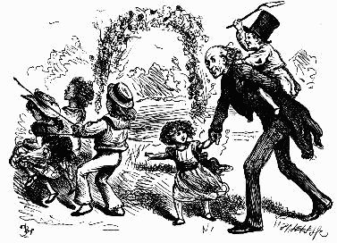
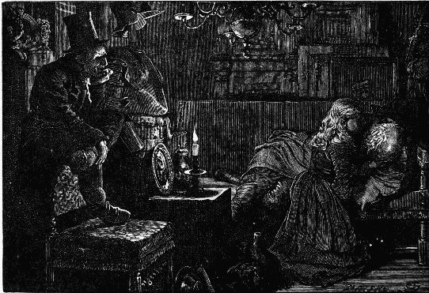
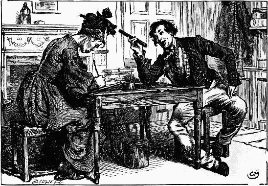
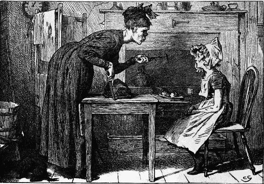
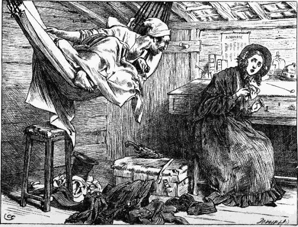
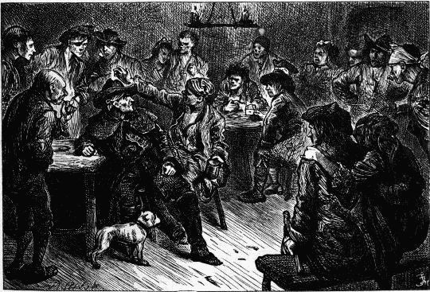
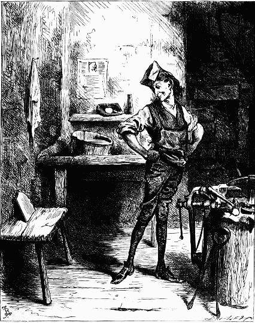

All the light and life of day came on; and amidst it all, and pressing down the grass whose every blade bore twenty tiny lives, lay the dead man, with his stark and rigid face turned upwards to the sky—Chap. l.
"I'll be married in the bottle-green," cried Arthur Gride—Chap. li. 
"Thieves! thieves!" shrieked the usurer, starting up and folding his book to his breast; "robbers! murder!"—Chap. liii.
"I must beseech you to contemplate again the fearful course to which you have been impelled"—Chap. liii.
He drew Ralph Nickleby to the further end of the room, and pointed towards Gride, who sat huddled together in a corner, fumbling nervously with the buttons of his coat, and exhibiting a face of which every skulking and base expression was sharpened and aggravated to the utmost of his anxiety and trepidation—Chap. liv.
"There is something missing, you say," said Ralph, shaking him furiously by the collar. "What is it?"—Chap. lvi.
"Do you see this? This is a bottle"—Chap. lvii.
"Who tampered with a selfish father, urging him to sell his daughter to old Arthur Gride, and tampered with Gride too, and did so in the little office, with a closet in the room"—Chap. lix.
"Total, all up with Squeers!"—Chap. lx.
Ralph makes one last appointment—and keeps it—Chap. lxii.
Clasping the iron railings with his hands, looked eagerly in, wondering which might be his grave—Chap. lxii.
 "Oh, Mr. Linkinwater, you're joking!" "No, no, I'm not. I'm not indeed," said Tim. "I will, if you will. Do, my dear!"—Chap. lxiii.
"Oh, Mr. Linkinwater, you're joking!" "No, no, I'm not. I'm not indeed," said Tim. "I will, if you will. Do, my dear!"—Chap. lxiii.
 The little people could do nothing without dear Newman Noggs—Chap. lxv.
NINE ILLUSTRATIONS
BY FRED BARNARD
At such times, or when the shouts of straggling brawlers met her ear, the Bowyer's daughter would look timidly back at Hugh, beseeching him to draw nearer.—Master Humphrey's Clock, chap. i.
As he sat upon a low seat beside my wife, I would peer at him for hours together from behind a tree.—Master Humphrey's Clock, chap. ii.
"Vith these vords he rushes into the shop, breaks the dummy's nose with a blow of his curlin'-irons, melts him down at the parlour fire, and never smiles afterwards."—Master Humphrey's Clock, chap. v.
At last they made a halt at the opening of a lonely, desolate space, and, pointing to a black object at some distance, asked Will if he saw that yonder.—Master Humphrey's Clock, chap. iii.
"With a look of scorn, she put into my hand a bit of paper, and took another partner. On the paper was pencilled, 'Heavens! Can I write the word? Is my husband a cow?'"—Holiday Romance, Part i.
"What is the matter?" asked Brother Haukyard. "Ay! what is the matter?" asked Brother Gimblet.—George Silverman's Explanation, chap. vi.
George Silverman writes his explanation.—Chap. ix. 
"You shall see me once again in the body, when you are tried for your life. You shall see me once again in the spirit, when the cord is round your neck and the crowd are crying against you."—Hunted Down, chap. v.
[120]
[121]
THIRTY-NINE ILLUSTRATIONS
BY C. GREEN
The door being opened, the child addressed him as her grandfather—Chap. i.
The old man sat himself down in a chair, and, with folded hands, looked sometimes at his grandson and sometimes at his strange companion—Chap. i.
When he did sit down, he tucked up his sleeves and squared his elbows and put his face close to the copy-book—Chap. iii.
Daniel Quilp sat himself down in a wherry to cross to the opposite shore—Chap. v.
 He soon cast his eyes upon a chair, into which he skipped with uncommon agility, and, perching himself on the back with his feet upon the seat, was thus enabled to look on—Chap. ix.
"I'll beat you to pulp, you dogs"—Chap. vi.
"Is it good, Brass, is it nice, is it fragrant?"—Chap. xi.
Not to be behindhand in the bustle, Mr. Quilp went to work with surprising vigour—Chap. xiii.
Nelly, kneeling down beside the box, was soon busily engaged in her task—Chap. xvii.
"Now, gentlemen," said Jerry, looking at them attentively, "the dog whose name's called, eats"—Chap. xviii.
There was but one lady who seemed to understand the child, and she was one who sat alone in a handsome carriage—Chap. xix.
A small white-headed boy with a sunburnt face appeared at the door while he was speaking, and stopping there to make a rustic bow, came in—Chap. xxv.
And then they went on arm-in-arm, very lovingly together—Chap. xxiii.
She handed down to them the tea-tray, the bread and butter, the knuckle of ham, and, in short, everything of which she had partaken herself—Chap. xxvi.
"That, ladies and gentlemen," said Mrs. Jarley, "is Jasper Packlemerton of atrocious memory"—Chap. xxviii.
And in this state and ceremony rode slowly through the town every morning—Chap. xxix.
 In some of these flourishes it went close to Miss Sally's head—Chap. xxxiii.
"You're the wax-work child, are you not?"—Chap. xxxi.
"Oh please," said a little voice very low down in the doorway, "will you come and show the lodgings?"—Chap. xxxiv.
 "Do you see this?"—Chap. xxxvi.
At length everything was ready, and they went off—Chap. xxxix.
The old man stood helplessly among them for a little time—Chap. xiii.
A man of very uncouth and rough appearance was standing over them—Chap. xliii.
"She is quite exhausted," said the schoolmaster—Chap. xlvi.
"Aquiline!" cried Quilp, thrusting in his head—Chap. xlix.
Both mother and daughter, trembling with terror and cold, . . . . obeyed Mr. Quilp's directions in submissive silence—Chap. l.
 "Halloa!"—Chap. l.
Elevating his glass, drank to their next merry-meeting in that jovial spot—Chap. li.
The child sat down in this old silent place—Chap. liii.
"Then, Marchioness," said Mr. Swiveller, "fire away!"—Chap. lviii.
The air was, "Away with Melancholy"—Chap. lvlli.
"Is it like Kit—is it his picture, his image, his very self?"—Chap. lxii.
The Marchioness jumped up quickly, and clapped her hands—Chap. lxiv.
She had nothing for it now, therefore, but to run after the chaise—Chap. lxv.
Tom immediately walked upon his hands to the window, and—if the expression be allowable—looked in with his shoes—Chap. lxvii.
The strong tide filled his throat, and bore him on its rapid current—Chap. lxvii.
"Master!" he cried, stooping on one knee and catching at his hand. "Dear Master! speak to me!"—Chap. lxxi.
Two wretched people were more than once observed to crawl at dusk from the inmost recesses of St. Giles's—Chap. lxxiii.
BARNABY RUDGE
A TALE OF THE RIOTS OF 'EIGHTY
FORTY-SIX ILLUSTRATIONS
BY FRED BARNARD
"Stand—let me see your face"—Chap. ii.
"Does the boy know what he's a-saying of!" cried the astonished John Willett—Chap. iii.
"I can't touch him!" cried the idiot, falling back and shuddering as with a strong spasm; "he's bloody!"—Chap. iii.
"If I am ever," said Mrs. V.,—not scolding, but in a sort of monotonous remonstrance—"in spirits, if i am ever cheerful, if I am ever more than usually disposed to be talkative and comfortable, this is the way I am treated"—Chap. vii.
Those lips within Sim's reach from day to day, and yet so far off—Chap. iv.
"Chester," said Mr. Haredale after a short silence, during which he had eyed his smiling face from time to time intently, "you have the head and heart of an evil spirit in all matters of deception"—Chap. xii.
 "He melts, I think. He goes like a drop of froth. You look at him, and there he is. You look at him again, and—there he isn't"—Chap. x.
"He melts, I think. He goes like a drop of froth. You look at him, and there he is. You look at him again, and—there he isn't"—Chap. x.
Father and Son—Chap. xv.
 "Come, come, master," cried the fellow, urged on by the looks of his comrades, and slapping him on the shoulder; "Be more companionable and communicative. Be more the gentleman in this good company"—Chap. xvi.
With that he advanced, and bending down over the prostrate form, softly turned back the head and looked into the face—Chap. xvii.
 She sat here, thoughtful and apart, until their time was out—Chap. xxv.
She sat here, thoughtful and apart, until their time was out—Chap. xxv.
Emma Haredale and Dolly Varden—Chap. xx.
"Huff or no huff," said Mr. Tappertit, detaining her by the wrist. "What do you mean, Jezebel! what were you going to say! Answer me!"—Chap. xxii.
How the accomplished gentleman spent the evening in the midst of a dazzling and brilliant circle—Chap. xxiv.
Now he would call to her from the topmost branch of some high tree by the roadside—Chap. xxv.
"I beg pardon—do I address Miss Haredale!"—Chap. xxix.
Finished by driving him with surprising swiftness against a heap of spittoons in one corner—Chap. xxx.
Lord George Gordon leaving the Maypole—Chap. xxxvii.
 "If they're a dream," said Sim, "let sculptures have such wisions, and chisel'em out when they wake. This is reality. Sleep has no such limbs as them"—Chap. xxxi.
"Ha, ha!" roared the fellow, smiting his leg; "for a gentleman as 'ull say a pleasant thing in a pleasant way, give me muster Gashford agin all London and Westminster!"—Chap. xxxvii. 
A nice trio—Chap. xxxix.
Gabriel Varden—Chap. xii.
"He retort!" cried Haredale. "Look you here, my lord. Do you know this man!"—Chap. xliii.
"In the name of God no!" shrieked the widow, darting forward. "Barnaby—my lord—see—he'll come back—Barnaby—Barnaby!"—Chap. xlviii.
"A brave evening, mother! If we had chinking in our pockets but a few specks of that gold which is piled up yonder in the sky, we should be rich for life"—Chap. xlv.
 Then seating himself under a spreading honeysuckle, and stretching his legs across the threshold so that no person could pass in or out without his knowledge, he took from his pocket a pipe, flint, steel, and tinder-box, and began to smoke—Chap. xlv.
Then seating himself under a spreading honeysuckle, and stretching his legs across the threshold so that no person could pass in or out without his knowledge, he took from his pocket a pipe, flint, steel, and tinder-box, and began to smoke—Chap. xlv.
The pole swept the air above the people's heads, and the man's saddle was empty in an instant—Chap. xlix.
It flitted onward, and was gone—Chap. l.
"You have been drinking," said the locksmith—Chap. li.
Flung itself upon the foremost one, knelt down upon its breast, and clutched its throat with both hands—Chap. lvi.
Putting his staff across his knees in case of alarm or surprise, summoned Grip to dinner—Chap. lvii.
 Looked moodily on as she flew to Miss Haredale's side—Chap. lix.
Looked moodily on as she flew to Miss Haredale's side—Chap. lix.
"Will you come?"
"I!" said the Lord Mayor most emphatically. "Certainly not"—Chap. lxi.
"Stop!" cried the locksmith, in a voice that made them falter—presenting, as he spoke, a gun. "Let an old man do that. You can spare him better"—Chap. lxiii.
The burning of Newgate—Chap. lxiv.
"No offence, no offence," said that personage in a conciliatory tone, as Hugh stopped in his draught and eyed him, with no pleasant look from head to foot—Chap. lxix.
"Tender-hearted!" echoed Dennis. "Tender-hearted! Look at this man. Do you call this constitootional! Do you see him shot through and through, instead of being worked off like a Briton! Damme if I know which party to side with"—Chap. lxix.
 "You ought to be the best instead of the worst," said Hugh, stopping before him. "Ha, ha, ha! see the hangman when it comes home to him!"—Chap. lxxvi.
"You ought to be the best instead of the worst," said Hugh, stopping before him. "Ha, ha, ha! see the hangman when it comes home to him!"—Chap. lxxvi.
"I shall bless your name," sobbed the locksmith's little daughter, "as long as I live"—Chap. lxxii.